“AI technology” routes to ai-field; “education” routes to system-spatial. The route changes the identity-bearing foreground path, not only the background.
Brand motion routing / comparative study
One image.
Thirteen animations.
The source stays fixed. The output grows. Motiflux observes the supplied raster's foreground components and turns those candidate actors into thirteen playable logo-construction results. The visible distinction is the logo's growth path; algorithm notes explain the result rather than replacing it.
How to read this page: left is the unchanged input image; right is the selected theme's generated GIF. Start with AI-field, pause all cards, then replay one route to compare its foreground draw-on path.


13routable themes
1identity source
0geometry edits
Operator guide / five-step contract
From logo file to defensible motion result.
Read the showcase in order. The source fixes the identity, the theme selects the foreground choreography, tuning describes measurable changes, the generator creates files, and evidence determines what you can call verified.
NEXT ACTION
01 / SOURCE · start here
Confirm the supplied image and the parts that must remain unchanged.
- 01SourceKeep identity fixedcurrent
- 02ThemeChoose one routenext
- 03TuneState measurable controlsnext
- 04BakeRun the exporternext
- 05VerifyCheck evidence and reviewnext
Say solid #0B0D12, 1600ms, speed 1.25x, or no particles. The controls below teach this vocabulary and update the local shell only.
A checked-in GIF/PDF is baked. A browser preview or copied command is not a new bake. Call it verified only after file, frame, runtime, source-identity, accessibility, and review checks pass.
STATUS LADDER
What the page can prove right now.
Current session: browser controls are preview-only; checked-in GIF/PDF assets are baked reference outputs; verified is not claimed.
- 01 / PREVIEWBrowser shellRoute, tuning, playback, and prompt edits change the local view or request text. No media file is written.
- 02 / BAKEDGenerator outputThe exporter has run and produced the GIF, poster, checkpoint, PDF, manifest, or package being discussed.
- 03 / VERIFIEDEvidence passedOnly after the relevant files, fingerprints, frame/runtime checks, source identity, accessibility, and human review are recorded.
Actual rendered output / AI-field route
From image to animation.
Give the skill one logo image and a request such as “make an AI company logo animation.” Motiflux observes candidate dot, monogram, and wordmark regions, routes the request to AI-field, and returns a portable GIF that grows the supplied pixels from a blank field to a complete logo.
Checked-in showcase: this GIF is already generated and stored in the repository. The page controls preview wording and playback; they do not regenerate media in the browser.
INPUT → OUTPUT
JPG → GIF
auto replay / final hold
JPG → GIF
auto replay / final hold
02 / FOREGROUND ROUTETheme-specific growth pathSame source actors, different draw-on grammar, timing, and settle behavior.
AI-FIELD / PLAYING GIFHow to read the deliverables
Three files, three kinds of evidence.
The media are related, but they do not prove the same thing. Use the GIF to inspect the complete motion path, the poster to land safely on the canonical final frame, and the PDF to review the seven checkpoints.
Complete generation evidence
The baked GIF records the playable blank → origin dot → circular arc → horizontal bar → P / monogram → Prysai wordmark → complete Logo sequence. It is the evidence for how the supplied pixels become the final mark over time.
Use Play, Pause, and Replay to compare the route; a GIF is portable, but the browser player cannot author a new GIF.Canonical final frame
The poster is a static canonical final-frame fallback. It appears for reduced motion, loading, an unavailable GIF, or the final reading hold; it does not prove the intermediate trajectory or human role acceptance.
Compare it with the source identity and final-frame evidence before calling the result verified.Static inspection atlas
The PDF captures seven static checkpoints for each route. It is useful for review, export, and print; it is not a playable GIF, a seekable timeline, or proof of every in-between frame.
Open the seven-stage PDF atlas · pair it with the GIF when motion behavior matters.Example request
“I want to make a logo animation for my artificial-intelligence company.”
AI-field animation
AI-field
the supplied image becomes a signal-convergence reveal
What the viewer sees
Blank field → origin dot → circular arc → horizontal bar → P / monogram → Prysai wordmark → complete Logo. Each card is a direct GIF output.
Three-step request pattern
Give the agent a usable brief.
Keywords select the foreground route. Tuning phrases change measurable controls. Export words select an actual delivery path.
Keep identity constraints first. Keep one primary theme. Ask for proof when a file or behavior matters.
Protect the mark
Attach the image and state what must stay unchanged. For raster input, ask the agent to observe candidate actors and keep a static canonical fallback.
preserve source geometry; use only observed actorsChoose one route
Say the context in plain language. For example, “AI technology” routes to ai-field; “education” routes to system-spatial. Add no more than two modifiers.
AI technology -> ai-field -> signal convergenceMake the output explicit
Use measurable phrases for color, timing, effects, and accessibility. Preview controls are not a baked export; rerun the generator to create GIF or PDF files.
solid #0B0D12 background; no particles; 1600ms; export GIFSource structure observation
Geometry candidates drive the growth staging; semantic roles remain reviewable.
METHODPillow foreground mask + connected components + layout groupingcandidate / 9 measured components
GROUPING2 actor groupssymbol and wordmark candidates are staged from the supplied pixels
REVIEW BOUNDARYneeds-reviewcandidate geometry is not semantic recognition or equivalent editable SVG
EVIDENCEOpen source analysis · Growth evidenceinspect masks, bounds, stage frame indices, GIF hashes, and unresolved items
AUTOMATIC STRUCTURE HANDOFFbounded-geometric-observation
decoded pixels and layout heuristics only; no semantic or vector reconstruction claim
DECISION TRACE
estimate border background and foreground mask → extract connected components with deterministic ordering → hypothesize symbol and wordmark groups from layout and geometry → bind supported roles to source-pixel motion strategies
SAFE ACTION
Bind only observed actors; keep uncertain roles behind the static-canonical fallback.
STAGED ACTOR MAPorigin_dot: origin_dot · arc: monogram_raw · bar: monogram_raw · monogram: monogram_raw · wordmark: wordmark_01, wordmark_02, wordmark_03, wordmark_04, wordmark_05, wordmark_06These names are deterministic candidate bindings used by the showcase; review them before treating a raster role as semantic truth.
Prompt lab / agent guidance
Describe the identity. Motiflux chooses the route.
Give the skill the source image, surface, industry, foreground growth order, visual controls, accessibility behavior, and output. The controls below update this local preview and the copyable request; they do not regenerate or rewrite the committed GIF pixels in the browser. Editing the request is text-only: it does not automatically reroute the preview. Choose a route or preset explicitly, then use “Sync controls to request” only when you want to replace the text. The stage labels below are candidate descriptions for this checked-in raster; review them before treating them as semantic roles. Use the storyboard chips to read the active construction phase.
RECOMMENDED ORDERsource → theme → growth → tuning → output → proofSay what must stay unchanged first. Then name one route and one measurable refinement.
Edit the request, then copy it into the skill.
CURRENT EVIDENCEGIF/PDF: baked · evidence: candidate · review: needs-reviewnot_run: raster-to-vector reconstruction, human role review, browser render analysis · unresolved: candidate role semantics
SELECTED THEMEAI-field
TRIGGER TAGSAI, artificial intelligence
FOREGROUND TRAJECTORYSignal convergence into the measured source pixels.
DRAW-ON IMPLEMENTATIONconvergence / seeded signals converge into measured actors
SPEED PROFILEaccelerate into geometry and decelerate at lockup
STAGE ORDERblank → origin dot → circular arc → horizontal bar → P / monogram → Prysai wordmark → complete Logo
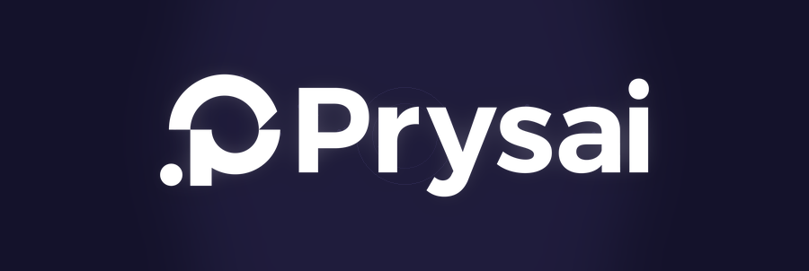
GIF evidence · checked-in route asset · browser tuning is preview-only until the generator is rerun.
PROMPT COMPOSER / LOCAL PREVIEW ONLY
PREVIEW ONLYUse these controls to learn precise tuning language. Background, particles, duration, speed, direction, and reduced motion change this page preview only. Downloaded GIF/PDF pixels remain unchanged until the named generator is run.
QUICK RECIPES
REQUEST SUMMARYAI-field · theme background · 1.8 s · medium · center outward · particles on · respect system motion · GIF
EXPORT CONFIRMATION GATE
source: supplied Prysai JPG · route: AI-field · actor map: candidate / needs-review · tuning: brand identity, theme background, 1.8 s, 1x, center outward, particles · output: GIF · gaps: raster role acceptance and browser/accessibility proof remain open
pending · review the source, candidate actor map, tuning, output, and open gaps
CURRENT CONFIGURATION / BAKED EXPORT COMMANDpython showcase/generate_showcase.py --theme ai-field --duration-ms 1800Preview: browser controls only. Baked: run python showcase/generate_showcase.py for the 13 checked-in GIFs and PDF, or the skill's project + build path for a source-specific HTML/SVG package. Verified: only after files, frame evidence, runtime checks, and source identity checks pass. Prompt guide · Export and tuning guide · Download PDF atlas · View source observation · View growth evidence
Show exact export commands
python showcase/generate_showcase.py --theme ai-field --background '#0B0D12' --duration-ms 1600 --speed 1.25 --no-particles
python showcase/generate_showcase.py --background '#F4F1E8' --duration-ms 2200 --speed 0.75 --no-particles
python skills/motiflux/tools/motiflux.py project path/to/logo.svg "AI logo animation, export HTML SVG" work/motiflux-project
python skills/motiflux/tools/motiflux.py validate motion-plan work/motiflux-project/motion-plan.yaml
python skills/motiflux/tools/motiflux.py build path/to/logo.svg work/motiflux-project/motion-plan.yaml work/motiflux-packageFor a JPG or PNG, the showcase GIF is source-pixel based and remains a reviewable candidate. Provide SVG when editable vector actors are required.
Theme animation atlas
13 of 13 animations shown · same stages, different foreground paths
RUNNING
System-spatial
system, product, saas, dashboard, enterprise, interface
INPUT / SAME IMAGE
source frame
source frame
OUTPUT / LOGO GROWTH GIF
 Loading animation frame...
Loading animation frame...
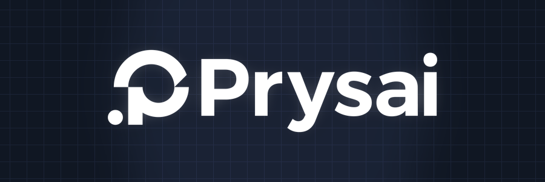
00 blank01 origin dot02 circular arc03 horizontal bar04 P / monogram05 Prysai wordmark06 complete Logo
blank
0.0s
Open / download growth GIF
{kind=link}
system-spatialgridlogo-growthhierarchy weightknowledge-graph-lockgridscan-forward
Communicate state change, hierarchy, and spatial continuity through semantic movement.
FOREGROUND TRAJECTORYPlace semantic nodes, connect their relationships, then lock the supplied mark component by component.
FOREGROUND CONTRACTgrid / scan-forward / standard / stepspath: measured actor-to-actor grid locks
speed: hierarchy stagger with a slow final lock
stages: blank > origin dot > circular arc > horizontal bar > P / monogram > Prysai wordmark > complete Logo
letter order: P > r > y > s > a > i
ALGORITHM STACK
- scene-graph dependency ordering
- shared spatial-anchor resolution
- monotonic cubic interpolation
- container-aware bounds
- reduced-motion substitution
BEATS
locatedrawlock
QA FOCUSspatial continuity; no layout shift; focus order; bounds
GROWTH RESULTThe supplied mark follows this foreground route: Place semantic nodes, connect their relationships, then lock the supplied mark component by component. blank → origin dot → circular arc → horizontal bar → P / monogram → Prysai wordmark → complete Logo
Premium-quiet
premium, luxury, fashion, beauty, editorial, quiet
INPUT / SAME IMAGE
source frame
source frame
OUTPUT / LOGO GROWTH GIF
 Loading animation frame...
Loading animation frame...
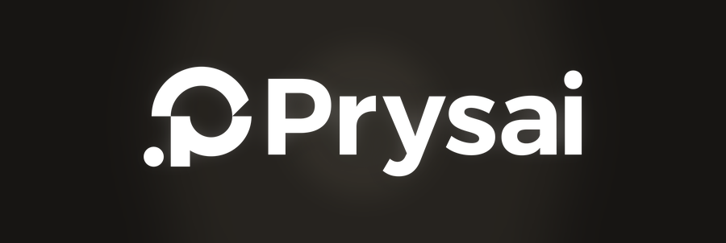
00 blank01 origin dot02 circular arc03 horizontal bar04 P / monogram05 Prysai wordmark06 complete Logo
blank
0.0s
Open / download growth GIF
{kind=link}
premium-quietquietlogo-growthamplitudecontour-etchcontourpolar-clockwise
Create perceived value through restraint, material presence, optical alignment, and deliberate timing.
FOREGROUND TRAJECTORYTrace the mark's measured outer contour first, then let the solid identity resolve with optical restraint.
FOREGROUND CONTRACTcontour / polar-clockwise / slow / softpath: source contour trace followed by fill
speed: slow trace with a deliberate reading pause
stages: blank > origin dot > circular arc > horizontal bar > P / monogram > Prysai wordmark > complete Logo
letter order: P > r > y > s > a > i
ALGORITHM STACK
- low-amplitude transform field
- opacity-and-mask sequencing
- slow monotonic interpolation
- optical-alignment correction
- low-frequency highlight pass
BEATS
sparktracerest
QA FOCUScontour integrity; optical centering; frame pacing; typography
GROWTH RESULTThe supplied mark follows this foreground route: Trace the mark's measured outer contour first, then let the solid identity resolve with optical restraint. blank → origin dot → circular arc → horizontal bar → P / monogram → Prysai wordmark → complete Logo
Developer-open
developer, open source, opensource, api, cli, code
INPUT / SAME IMAGE
source frame
source frame
OUTPUT / LOGO GROWTH GIF
 Loading animation frame...
Loading animation frame...
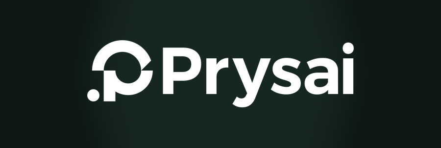
00 blank01 origin dot02 circular arc03 horizontal bar04 P / monogram05 Prysai wordmark06 complete Logo
blank
0.0s
Open / download growth GIF
{kind=link}
developer-openscanlogo-growthphase steptoken-committokenscan-reverse
Make transformation legible to technical users through explicit phases and reproducible state.
FOREGROUND TRAJECTORYCommit deterministic identity tokens in an inspectable sequence, one source component at a time.
FOREGROUND CONTRACTtoken / scan-reverse / staggered / linearpath: deterministic left-to-right actor commits
speed: even token cadence with short pauses
stages: blank > origin dot > circular arc > horizontal bar > P / monogram > Prysai wordmark > complete Logo
letter order: P > r > y > s > a > i
ALGORITHM STACK
- deterministic state machine
- tokenized property channels
- typed event timeline
- semantic actor metadata
- reproducible seek controls
BEATS
parsestrokecommit
QA FOCUSdeterminism; event order; inspectability; keyboard operation
GROWTH RESULTThe supplied mark follows this foreground route: Commit deterministic identity tokens in an inspectable sequence, one source component at a time. blank → origin dot → circular arc → horizontal bar → P / monogram → Prysai wordmark → complete Logo
AI-field
ai, ai technology, artificial intelligence, machine learning, ml, neural
INPUT / SAME IMAGE
source frame
source frame
OUTPUT / LOGO GROWTH GIF
 Loading animation frame...
Loading animation frame...
00 blank01 origin dot02 circular arc03 horizontal bar04 P / monogram05 Prysai wordmark06 complete Logo
blank
0.0s
Open / download growth GIF
ai-fieldfieldlogo-growthfield densitysignal-convergenceconvergencepolar-counter
Suggest intelligence through organized transformation rather than science-fiction decoration.
FOREGROUND TRAJECTORYMove deterministic external signals into their measured Logo pixels until the mark assembles from the field.
FOREGROUND CONTRACTconvergence / polar-counter / field / ease_outpath: seeded signals converge into measured actors
speed: accelerate into geometry and decelerate at lockup
stages: blank > origin dot > circular arc > horizontal bar > P / monogram > Prysai wordmark > complete Logo
letter order: P > r > y > s > a > i
ALGORITHM STACK
- constraint-to-signal mapping
- seeded vector-field guidance
- graph-flow convergence
- progressive disclosure
- confidence-bounded morphing
BEATS
seedconvergeland
QA FOCUSdeterminism; semantic landing; performance; reduced motion; misleading-data avoidance
GROWTH RESULTThe supplied mark follows this foreground route: Move deterministic external signals into their measured Logo pixels until the mark assembles from the field. blank → origin dot → circular arc → horizontal bar → P / monogram → Prysai wordmark → complete Logo
Fintech-trust
fintech, banking, bank, payments, payment, trust
INPUT / SAME IMAGE
source frame
source frame
OUTPUT / LOGO GROWTH GIF
 Loading animation frame...
Loading animation frame...
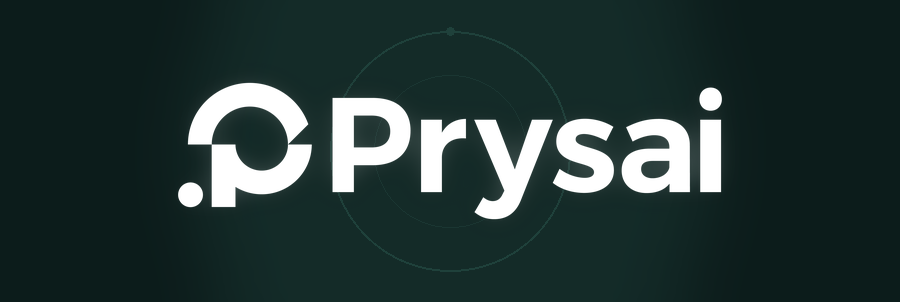
00 blank01 origin dot02 circular arc03 horizontal bar04 P / monogram05 Prysai wordmark06 complete Logo
blank
0.0s
Open / download growth GIF
{kind=link}
fintech-trustringlogo-growthprogress modeprogress-confirmradialpolar-offset
Communicate reliability, controlled movement, and successful resolution.
FOREGROUND TRAJECTORYUse a bounded progress state to reveal the mark from its center, then settle into an unambiguous confirmation.
FOREGROUND CONTRACTradial / polar-offset / center / smoothpath: center-outward progress gates the supplied actors
speed: steady processing with a bounded confirmation settle
stages: blank > origin dot > circular arc > horizontal bar > P / monogram > Prysai wordmark > complete Logo
letter order: P > r > y > s > a > i
ALGORITHM STACK
- monotonic progress
- guarded state transitions
- bounded confirmation spring
- high-contrast completion cue
- failure-safe cancellation
BEATS
orbitcloseconfirm
QA FOCUSstate correctness; cancellation; contrast; announcement timing; no false success
GROWTH RESULTThe supplied mark follows this foreground route: Use a bounded progress state to reveal the mark from its center, then settle into an unambiguous confirmation. blank → origin dot → circular arc → horizontal bar → P / monogram → Prysai wordmark → complete Logo
Security-shield
security, privacy, identity, authentication, auth, defense
INPUT / SAME IMAGE
source frame
source frame
OUTPUT / LOGO GROWTH GIF
 Loading animation frame...
Loading animation frame...
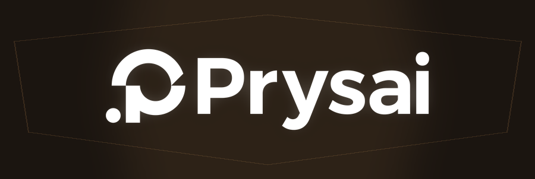
00 blank01 origin dot02 circular arc03 horizontal bar04 P / monogram05 Prysai wordmark06 complete Logo
blank
0.0s
Open / download growth GIF
{kind=link}
security-shieldshieldlogo-growthverification stateboundary-unlockboundaryboundary-reverse
Convey boundary, verification, and controlled access.
FOREGROUND TRAJECTORYEstablish the measured Logo boundary first, verify the interior, and unlock the wordmark last.
FOREGROUND CONTRACTboundary / boundary-reverse / late / softpath: perimeter-first trace then interior unlock
speed: guarded boundary, quick verify, deliberate release
stages: blank > origin dot > circular arc > horizontal bar > P / monogram > Prysai wordmark > complete Logo
letter order: P > r > y > s > a > i
ALGORITHM STACK
- boundary-first reveal
- occlusion-and-aperture logic
- finite-state verification sequence
- restrained lock transition
- interruptible animation
BEATS
boundaryverifyunlock
QA FOCUSsemantic state; interruption; focus; contrast; temporal clarity
GROWTH RESULTThe supplied mark follows this foreground route: Establish the measured Logo boundary first, verify the interior, and unlock the wordmark last. blank → origin dot → circular arc → horizontal bar → P / monogram → Prysai wordmark → complete Logo
Commerce-energy
commerce, retail, shopping, marketplace, consumer, sale
INPUT / SAME IMAGE
source frame
source frame
OUTPUT / LOGO GROWTH GIF
 Loading animation frame...
Loading animation frame...
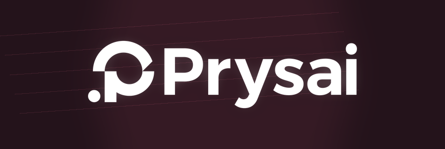
00 blank01 origin dot02 circular arc03 horizontal bar04 P / monogram05 Prysai wordmark06 complete Logo
blank
0.0s
Open / download growth GIF
{kind=link}
commerce-energyburstlogo-growthinteraction speedburst-assemblyburstdiagonal-forward
Create approachability and action without making the brand feel unstable.
FOREGROUND TRAJECTORYCompress identity components at a shared origin, release them outward, and settle quickly into the lockup.
FOREGROUND CONTRACTburst / diagonal-forward / rapid / ease_outpath: compressed actors release from a shared origin
speed: short anticipation, fast release, rapid settle
stages: blank > origin dot > circular arc > horizontal bar > P / monogram > Prysai wordmark > complete Logo
letter order: P > r > y > s > a > i
ALGORITHM STACK
- short interaction transitions
- spring-like confirmation
- badge-and-accent choreography
- responsive hit-area anchoring
- action-completion state machine
BEATS
compressreleaseidle
QA FOCUSinput latency; hit-area stability; repeat action; focus; touch behavior
GROWTH RESULTThe supplied mark follows this foreground route: Compress identity components at a shared origin, release them outward, and settle quickly into the lockup. blank → origin dot → circular arc → horizontal bar → P / monogram → Prysai wordmark → complete Logo
Automotive-precision
automotive, mobility, transport, engineering, performance, industrial
INPUT / SAME IMAGE
source frame
source frame
OUTPUT / LOGO GROWTH GIF
 Loading animation frame...
Loading animation frame...
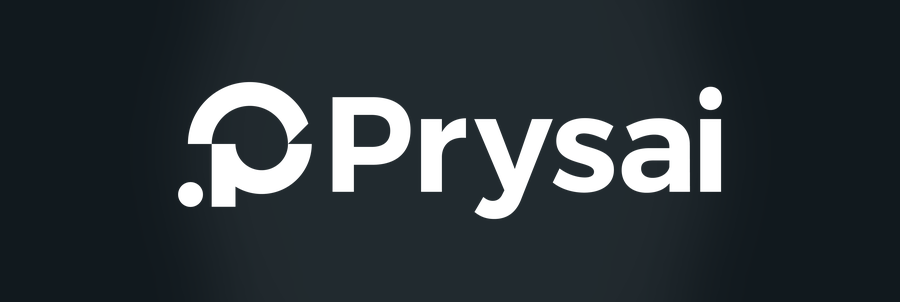
00 blank01 origin dot02 circular arc03 horizontal bar04 P / monogram05 Prysai wordmark06 complete Logo
blank
0.0s
Open / download growth GIF
{kind=link}
automotive-precisiontracklogo-growthmasskinematic-locktrackscan-slope
Express mass, direction, precision, and mechanical confidence.
FOREGROUND TRAJECTORYCarry each supplied component along one directional velocity path and lock it with a controlled scan.
FOREGROUND CONTRACTtrack / scan-slope / standard / ease_outpath: single-axis actor travel with velocity continuity
speed: heavy forms slow; scan accent remains fast
stages: blank > origin dot > circular arc > horizontal bar > P / monogram > Prysai wordmark > complete Logo
letter order: P > r > y > s > a > i
ALGORITHM STACK
- kinematic trajectory planning
- acceleration and jerk limits
- anchor-based transforms
- directional light sweep
- constrained settle
BEATS
scandrawsettle
QA FOCUSjerk continuity; clipping; anchor correctness; responsive bounds
GROWTH RESULTThe supplied mark follows this foreground route: Carry each supplied component along one directional velocity path and lock it with a controlled scan. blank → origin dot → circular arc → horizontal bar → P / monogram → Prysai wordmark → complete Logo
Sports-impact
sports, fitness, competition, speed, impact, bold
INPUT / SAME IMAGE
source frame
source frame
OUTPUT / LOGO GROWTH GIF
 Loading animation frame...
Loading animation frame...
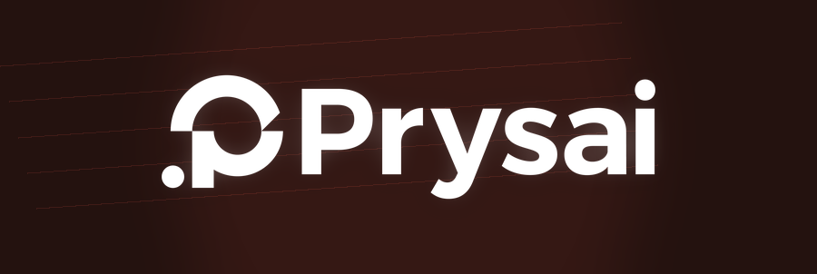
00 blank01 origin dot02 circular arc03 horizontal bar04 P / monogram05 Prysai wordmark06 complete Logo
blank
0.0s
Open / download growth GIF
{kind=link}
sports-impactspeedlogo-growthimpact strengthimpact-releaseimpactdiagonal-reverse
Create energy through anticipation, compression, release, and recovery.
FOREGROUND TRAJECTORYCompress the full supplied mark, release it along its dominant axis, and recover to a readable final silhouette.
FOREGROUND CONTRACTimpact / diagonal-reverse / impact / ease_outpath: horizontal compression followed by directional release
speed: sharp impact with controlled recovery
stages: blank > origin dot > circular arc > horizontal bar > P / monogram > Prysai wordmark > complete Logo
letter order: P > r > y > s > a > i
ALGORITHM STACK
- anticipation compression
- velocity burst
- directional smear or stretch
- controlled overshoot
- recovery-to-idle state
BEATS
chargestrikerecover
QA FOCUSpeak silhouette; deformation limit; flashing risk; reduced motion
GROWTH RESULTThe supplied mark follows this foreground route: Compress the full supplied mark, release it along its dominant axis, and recover to a readable final silhouette. blank → origin dot → circular arc → horizontal bar → P / monogram → Prysai wordmark → complete Logo
Cinematic-title
cinematic, film, movie, title, trailer, story
INPUT / SAME IMAGE
source frame
source frame
OUTPUT / LOGO GROWTH GIF
 Loading animation frame...
Loading animation frame...
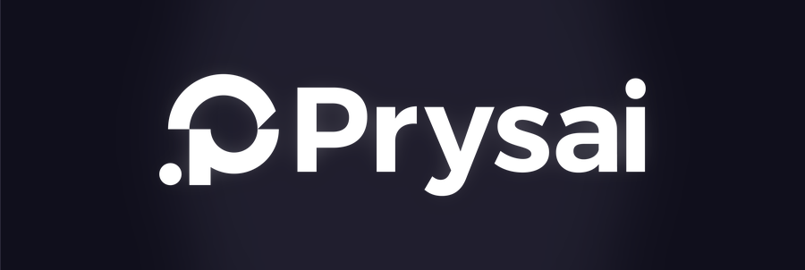
00 blank01 origin dot02 circular arc03 horizontal bar04 P / monogram05 Prysai wordmark06 complete Logo
blank
0.0s
Open / download growth GIF
{kind=link}
cinematic-titlecurtainlogo-growthdepthaperture-titleaperturediagonal-center
Reveal meaning through attention control, scale, silence, and composition.
FOREGROUND TRAJECTORYOpen a central title aperture through the dark field, expose the lockup in layers, and hold the reading pause.
FOREGROUND CONTRACTaperture / diagonal-center / title / softpath: center aperture gates contour and lockup layers
speed: slow exposure followed by a long title hold
stages: blank > origin dot > circular arc > horizontal bar > P / monogram > Prysai wordmark > complete Logo
letter order: P > r > y > s > a > i
ALGORITHM STACK
- camera-space composition
- depth-layer parallax
- masked reveal
- light-to-dark exposure curve
- beat-driven timing
BEATS
darkrevealhold
QA FOCUSfinal readability; crop safety; contrast; reduced motion; static fallback
GROWTH RESULTThe supplied mark follows this foreground route: Open a central title aperture through the dark field, expose the lockup in layers, and hold the reading pause. blank → origin dot → circular arc → horizontal bar → P / monogram → Prysai wordmark → complete Logo
Nature-flow
nature, organic, wellness, sustainable, water, wind
INPUT / SAME IMAGE
source frame
source frame
OUTPUT / LOGO GROWTH GIF
 Loading animation frame...
Loading animation frame...
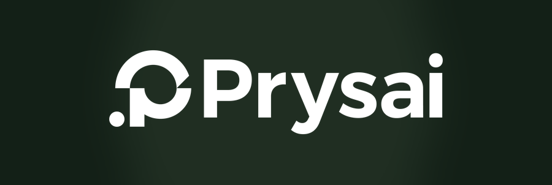
00 blank01 origin dot02 circular arc03 horizontal bar04 P / monogram05 Prysai wordmark06 complete Logo
blank
0.0s
Open / download growth GIF
{kind=link}
nature-flowwavelogo-growthflow amplitudeorganic-currentorganicwave-phase-a
Imply growth, breath, flow, and connection without losing mark structure.
FOREGROUND TRAJECTORYCarry each supplied component on a smooth low-frequency current before it roots into the canonical position.
FOREGROUND CONTRACTorganic / wave-phase-a / organic / softpath: curvature-following drift into source positions
speed: low-frequency flow with damped settle
stages: blank > origin dot > circular arc > horizontal bar > P / monogram > Prysai wordmark > complete Logo
letter order: P > r > y > s > a > i
ALGORITHM STACK
- curvature-following flow
- bounded low-frequency drift
- phase-offset secondary actors
- damped wave
- organic settle
BEATS
breathegrowroot
QA FOCUSsmoothness; amplitude bounds; topology; loop seam; reduced motion
GROWTH RESULTThe supplied mark follows this foreground route: Carry each supplied component on a smooth low-frequency current before it roots into the canonical position. blank → origin dot → circular arc → horizontal bar → P / monogram → Prysai wordmark → complete Logo
Gaming-world
gaming, esports, fantasy, sci-fi, character, quest
INPUT / SAME IMAGE
source frame
source frame
OUTPUT / LOGO GROWTH GIF
 Loading animation frame...
Loading animation frame...
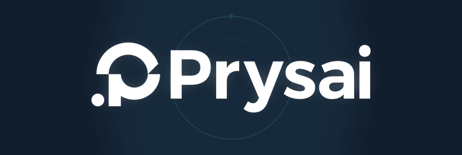
00 blank01 origin dot02 circular arc03 horizontal bar04 P / monogram05 Prysai wordmark06 complete Logo
blank
0.0s
Open / download growth GIF
{kind=link}
gaming-worldorbitlogo-growtheffect densityorbit-questorbitpolar-orbit
Create personality, reward, and world-building around a recognizable mark.
FOREGROUND TRAJECTORYSpawn identity components on deterministic orbits, assemble them as quest rewards, and clear the field.
FOREGROUND CONTRACTorbit / polar-orbit / orbit / ease_outpath: deterministic orbital arrivals into actor targets
speed: spawn, accumulate, snap to reward, clear
stages: blank > origin dot > circular arc > horizontal bar > P / monogram > Prysai wordmark > complete Logo
letter order: P > r > y > s > a > i
ALGORITHM STACK
- stateful combo or quest beats
- seeded particle secondary layers
- bounded squash and stretch
- camera emphasis
- interaction-triggered replay
BEATS
spawnassembleclear
QA FOCUSreadability; deterministic replay; flashing limits; performance; reduced motion
GROWTH RESULTThe supplied mark follows this foreground route: Spawn identity components on deterministic orbits, assemble them as quest rewards, and clear the field. blank → origin dot → circular arc → horizontal bar → P / monogram → Prysai wordmark → complete Logo
Accessibility-first
accessible, accessibility, reduced motion, calm, inclusive, low motion
INPUT / SAME IMAGE
source frame
source frame
OUTPUT / LOGO GROWTH GIF
 Loading animation frame...
Loading animation frame...
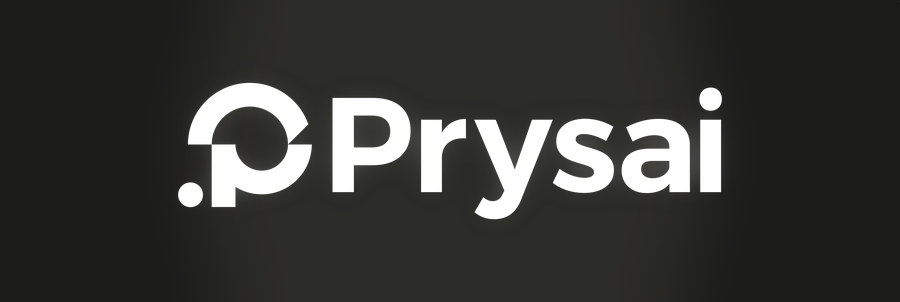
00 blank01 origin dot02 circular arc03 horizontal bar04 P / monogram05 Prysai wordmark06 complete Logo
blank
0.0s
Open / download growth GIF
{kind=link}
accessibility-firstplainlogo-growthpausesemantic-fadefadeopacity-stable
Preserve orientation and feedback while minimizing vestibular, cognitive, and visual load.
FOREGROUND TRAJECTORYUse semantic order and opacity only, preserving stable geometry, focus, and a static-safe canonical landing.
FOREGROUND CONTRACTfade / opacity-stable / accessible / softpath: ordered opacity with stable source geometry
speed: opacity-first and no overshoot
stages: blank > origin dot > circular arc > horizontal bar > P / monogram > Prysai wordmark > complete Logo
letter order: P > r > y > s > a > i
ALGORITHM STACK
- opacity and color state changes
- short translation only when necessary
- user-controlled pause and tempo
- focus-preserving transitions
- static canonical fallback
BEATS
appearformrest
QA FOCUSaccessibility tree; focus; contrast; reduced motion; static equivalence
GROWTH RESULTThe supplied mark follows this foreground route: Use semantic order and opacity only, preserving stable geometry, focus, and a static-safe canonical landing. blank → origin dot → circular arc → horizontal bar → P / monogram → Prysai wordmark → complete Logo